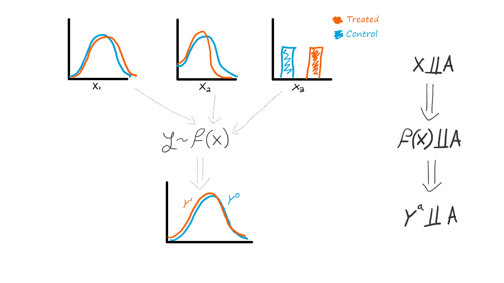

Why we care for covariate balancing in comparative studies
Balancing variables in statistical comparative analysis is a proxy, not a goal.
Comparative analysis is the scientific method for discovering effectiveness. Whether it is in medicine, economics, or elsewhere, we perform studies that collect information and compares two groups in order to see which is better and if we can learn any means to improve. These studies can be experiments where we control for the group assignment via randomization, or observational studies where participants self-assign.
One of the first tasks in analyzing data from such studies will be to compare the characteristics of the two groups. It isn’t called table one for nothing. In which, we summarize the distribution of variables between the two groups and might even perform a statistical test on how the groups differ. There’s a long-lasting debate on whether that’s a good practice or not. In general, biostatisticians tend to avoid it, while economists tend to prefer it. The recent Data Colada analysis of Dan Arielly fraudulent data — which part of the evidence was big baseline differences albeit the randomization — reopened this Pandora box, pitting academics against one another on Twitter.
In this post is my theory on why we compare balancing in baseline characteristics between groups.
How we infer causality
Formalizing causality is a task so hard, it left philosophers baffled to this day. In the Rubin’s causal model, we have two unobserved quantities: \(Y^1\) is the hypothetical outcome a person would have had — had he been assigned a treatment, and \(Y^0\) is the hypothetical outcome that that same person would have had had he not been treated. Once we have these two hypothetical trajectories, two parallel universes in which everything is equal except the treatment assignment of that person — we can isolate the impact of the treatment. If we observe the outcome in both worlds, we can see the causal effect of the treatment — the changes in outcomes that were caused only due to the treatment.
However, in reality — outside the Marvel Cinematic Universe of Rick and Morty — we don’t have access to this multiverse. People either get treated or they don’t.
And so, because we can’t both give and not-give a treatment to the same person, the next best thing is to give a group of people the treatment and another group a placebo and compare the two groups. And this is where we start regarding group balancing. It is only but intuitive that we will want the groups to be identical in all regards, except to the treatment assignment, so we can isolate the contribution of the treatment, and cancel out changes in outcomes that may be due to differences in baseline characteristics.
Comparing factors is theoretically redundant
Here, I said it. There are no theoretical justifications to compare the distribution of covariates between groups.
Statistical theory of causal inference lays out three conditions in order to obtain causal effects from data: positivity, consistency, and exchangeability/ignorability. The crux of the argument considers the latter.
Intuitively, the exchangeability assumption captures the notion that there shouldn’t be any systematic differences between the groups.
Mathematically, the exchangeability assumption regards the independency of the potential outcomes from the treatment assignment: \(Y^0, Y^1 \perp \!\!\! \perp A\) .
You see what’s in there? This means thatit is the distribution of potential outcomes that should be balanced between groups, not the baseline factors!
Why we still do it
In case you missed it, the necessary exchangeability condition above regards potential outcomes — a hypothetical quantity we can't really observe.
And if we can't observe it, we can't test to validate whether it holds in any particular case.
However, we do have some prior understanding of how the world works. For example, clinicians may know that the risk for stroke is dependent on one's age, sex, and history of blood pressure; economists may know that one's salary depends on their past salaries and education level. Therefore, we are able to, at-least mentally, construct some function from baseline factors to the outcome. In turn, this means that if the variables \(X\) are balanced between groups then \(f(X)\) (which is some projection of them onto a scalar) is also balanced between groups, which suggests the potential outcomes are balanced between groups.

Testing for covariate balancing is an educated mental shortcut we do. A sort of an ambiguous control test — good balancing is reassuring but not definitive, bad balancing is alarming but not devastating. We just grasp on whatever data we can observe (covariates) and try to use our expertise, common sense, and logic to project it onto what we can't observe (potential outcomes).
Conclusions
Covariates will be balanced due to randomization, but it is not the main reason why we randomize. Balanced covariates are just a convenient side effect while we try to balance the distribution of potential outcomes.
Therefore, it is important to understand that testing for covariate balancing is not the end goal. It is, at best, a proxy for what we really want to know but cannot have. And being the humans that we are — instead of doing nothing about it, we try doing our best.
Appendix: what can we benefit from covariate balancing tests and at what cost?
I hope this explained why a debate exists regarding balancing tests. There's no factual right or wrong, only a debate on whether that mental leap from covariates to potential outcomes is uncalled for or not.
In my opinion the criticism against it is valid: First and foremost, variables must not be balanced — it the potential outcomes that should. Second, even if they are not — this is what statistical adjustment is for. Employing statistical tests in randomized data is even more baseless — there are no two population, just groups randomized from the same population — the null hypothesis is known to be true. Besides, for a large enough sample even meaningless small differences can become statistically significant, but it doesn't mean they are of practical importance. And for large enough number of covariates, some may pass the statistically significant threshold simply by chance of sampling (a false-positive, or type-1 error), rather than inherent difference in the characteristics between groups. Therefore, having statistical tests (and p-values) in a table one may be considered redundant or even counterproductive — causing confusion by focusing readers — not all of whom are statistical experts — on unessential information.
However, the criticism for it is also valid: randomization might not be that simple to pull off (especially blindly, across multiple facilities, etc.) and humans do tend to err whenever they have the chance to. What guarantees do we have randomization was applied correctly? Do we blindly believe the process? Shouldn't we validate it? Unfortunately, verifying random assignment is near-impossible due to, well, the randomness inherent to the process. There are explicit tests for randomness but checking for balancing is a simple one to employ. Again, it can only hint a problem exist, flagging out more attention is deserved, but it cannot be definitive.
Therefore, in my opinion, when working on randomized data, it's ok to test for balancing as a sanity check, but don't show it off (and if you do, bury it in an appendix where no one will read it anyway. Just like this section. Consider commenting with a penguin if you do?). It can be misleading at worse or be an avenue for misguided criticism at best (don't feed the trolls).